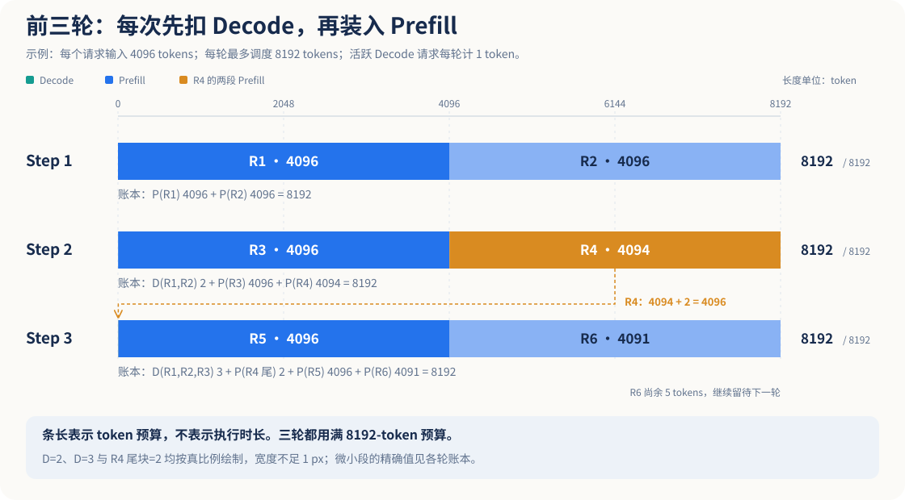
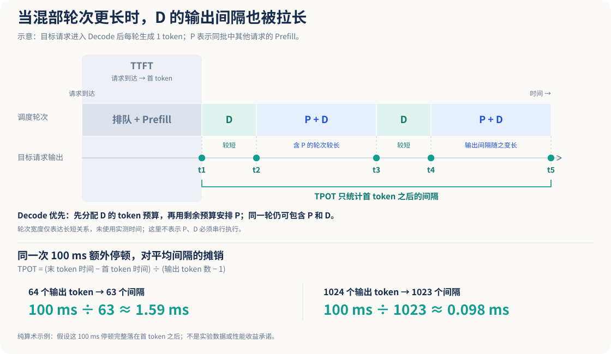
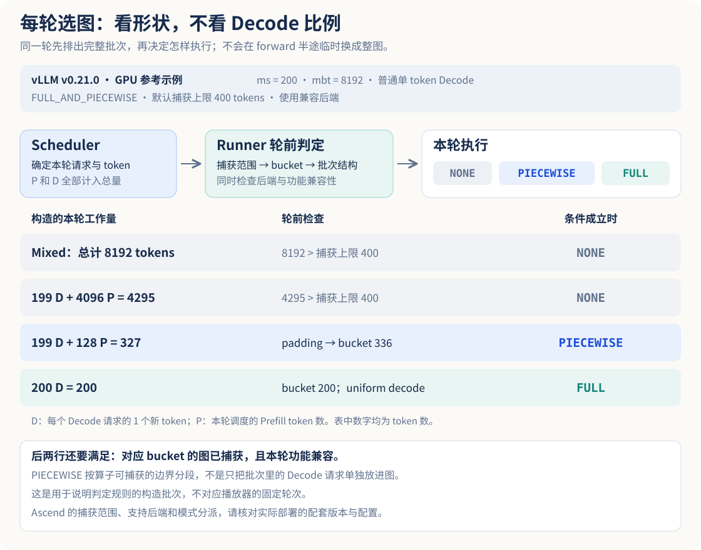
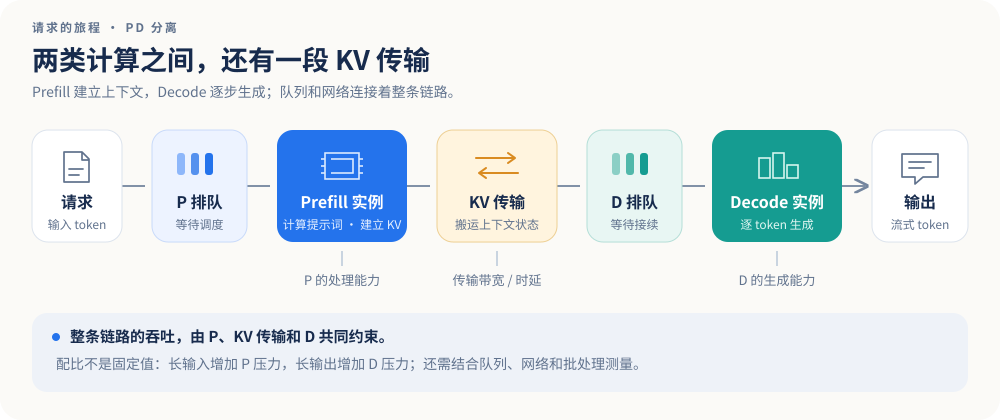
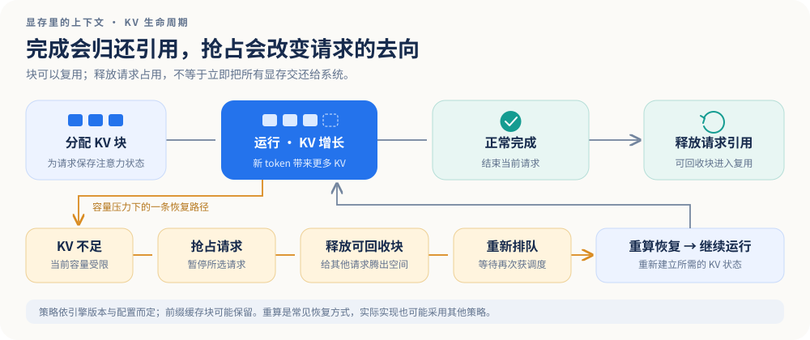
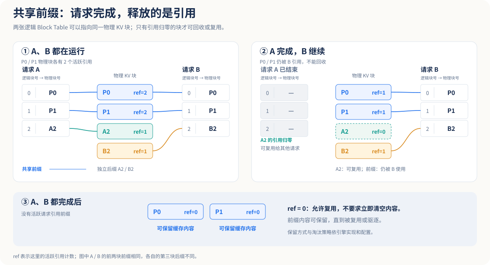

两个参数，限制的是两件事
先考虑混部场景：vLLM Ascend 引擎设置 ms=200、mbt=8192；使用 AISBench 发请求，输入 4K、输出 1K，客户端始终保持未收回的请求为 200 条。这是下面推演的背景。
max-num-seqs本例每请求一条序列。调度的序列总数受 ms 限制，客户端保持 200 并发不等于每轮必有 200 条在计算。
max-num-batched-tokens本轮新计算的 token 总数上限。Prefill 可一次处理一块；普通 Decode 每条序列通常前进一步，消耗 1 个 token 预算。
ms 与 mbt 允许，并不代表请求一定能被调度。KV 块不足、上下文长度以及具体调度策略，也会影响准入与抢占。
4K 输入 · 1K 输出 · 200 并发
假设启用 Chunked Prefill，采用 Decode 优先的拼批策略；忽略前缀缓存、投机解码和 KV 容量不足。P 表示 Prefill，D 表示 Decode。先截取初始 200 条请求，用单波、不补入的模型推演；稳态测试再切换到持续补入。闭环中的后续行为不能直接套用单波模型。
把一轮调度，拆开来看可交互
首先，第一批 P 请求里，这一轮能完整处理的就是两条：4096+4096=8192。下一轮两条请求进入 D，剩下的 8190 个 token 预算再组装新的 P。第三轮先续接上一轮没处理完的输入。

上图按真实 token 比例绘制；少量 Decode 会细到几乎不可见，具体用量见下方。
这个模型省略了什么？
本模拟只演示调度顺序与预算。固定 200 个请求，不在完成后补入新请求；ms=200、mbt=8192、输入均为 4096。完整 Prefill 时记入首个输出 token，其后从下一轮开始 Decode；输出总长为 O 时，再推进 O−1 个 Decode 轮次。该计数只是无投机、每轮生成 1 token 的简化语义。
每轮耗时并不相同，横向轮次不能直接换算成延迟。模拟不包含硬件并行、KV 块、传输、调度开销、缓存命中与多序列请求，不能用来预测 TPS 或 TPOT。
模型推演200 条 D 只用掉 200/8192 的 token 预算，不能据此认定设备利用率只有 2.44%。在全注意力模型下，每个新 token 仍需访问历史 KV；计算量、访存量和执行时间不由“本轮新 token 数”单独决定。
调度器排了什么，执行层就直接算什么吗？
调度器先给出本轮的 token 数、请求信息和 KV 块映射；Worker / Model Runner 再按这些信息组织输入、构建 Attention 元数据并执行模型。不是 Scheduler 直接调用一个 P 算子、再调用一个 D 算子。
EngineCore.step() → Scheduler.schedule() → SchedulerOutput → UniProcExecutor.execute_model() / collective_rpc() → WorkerWrapperBase.execute_model() → GPU Worker.execute_model() → GPUModelRunner.execute_model() / _model_forward() → 采样结果 → Scheduler.update_from_output()
这是 GPU 单进程 UniProcExecutor 的参考链。实际调用路径随执行器、后端和异步设置而异；Ascend 的 NPU Worker / Runner 需沿对应实现核对。部分采样由后续 sample_tokens 路径完成。
逐段对照：EngineCore ↗UniProcExecutor ↗WorkerWrapperBase ↗GPU Worker ↗GPU Model Runner ↗
装填、混合、纯 D 与排空
请求陆续进入 Decode，也可能在装填结束前就完成。下面四类工作组成，不要求按顺序各出现一次；出现纯 D，也不能据此认定进入稳态。
首批 Prefill
尚无可解码请求。预算主要用来消化输入。
持续混合填充
D 逐渐增多，P 在剩余 token 预算中分块推进。
可能有纯 D 窗口
运行请求均已完成 P，且本轮没有可调度的 P，只剩 D。
补入或排空
有待处理请求则继续补入；没有则逐步排空。
纯 Decode 阶段不一定“很短”
1,024 token 的输出要经历大量解码轮次。200 条请求的 Prefill 可能较早完成，之后纯 D 窗口反而很长。其持续时间取决于输出长度、填充速度、ms、预算和真实调度策略。
输出只有 64，为什么 TPOT 可能变长？
如果请求的解码生涯大部分落在 P/D 混合填充期，包含较重 Prefill 的调度轮次就可能拉长相邻输出 token 的时间间隔。短输出没有足够的后续纯 D 窗口“稀释”这部分影响。
这是由混部机制提出的待验证解释：需要看到同一请求的长 ITL 与较重 Prefill 轮次对齐，才能支持这一判断。硬件、分块大小、抢占和负载分布也会影响结果。
别把首 Token 前的等待算进 TPOT
这是常见的每请求定义，要求输出多于 1 个 token。首 token 前的排队和 Prefill 通常体现在 TTFT；首 token 后的调度或抢占等待会影响 TPOT / ITL，应结合分位数定位。

同一次停顿，为什么短输出的均值更敏感？
假设首 token 后额外出现一次 100 ms 停顿，其余条件相同。输出 64 个 token 时，TPOT 均值增加 100/63 ≈ 1.59 ms；输出 1024 个 token 时，增加 100/1023 ≈ 0.098 ms。这是分母不同带来的算术结果，没有指定停顿来自哪个模块，也不是任何设备的实测收益。
资料确认分块 Prefill 的预算选择存在取舍：更小的块通常减小单轮混合工作的规模，但 P 要跨更多轮完成；更大的预算可以提高 Prefill 推进速度，同时也可能延长混合轮次的 ITL。当前部署的最优点要在目标输入输出分布下测量。vLLM 调优说明 ↗
D 越来越多，能在某一轮改用图吗？
可以，切换点在本轮前向开始之前。调度器给出工作量，Runner 再按本轮形状选执行路径；同一实例不必从启动到结束都用同一种路径。已经执行到一半的前向，不会临时接成另一张完整图。
普通单 Token D 每条只带来 1 个新 Token，P 却可能带来几千个。还要检查有效图配置、后端能力、捕获档位和功能兼容性。“全部是 D”也不能单独保证回放图。
资料确认通常启动时先对有限档位预热并捕获，运行时更新输入和元数据，再回放匹配图。线上遇到新形状，不等于可以任意临时捕获。图回放减少重复提交设备工作的开销，Attention 与 KV 访问仍要执行。vLLM 图捕获与回放 ↗
| 本轮模式 | 执行方式 |
|---|---|
NONE | 不回放设备图；是否经过 torch.compile 是另一个维度。 |
PIECEWISE | 按算子边界分段：兼容片段回放图，不兼容部分在图外执行。不是只抽出 D 请求进图。 |
FULL | 模型前向走完整图；是否支持混合 P/D batch，要看有效配置和后端。 |
FULL_AND_PIECEWISE 是配置策略：在图可用时，uniform decode 用 FULL，其他 batch 用 PIECEWISE，没匹配图则用 NONE。普通解码的 uniform 通常要求每条本轮均为 1 个 Token；投机解码可以有更大的统一 query length。模式定义 ↗匹配与回退 ↗

教学对照图中取普通单 Token D、ms=200、mbt=8192、无 LoRA、FULL_AND_PIECEWISE；手动选定最大捕获尺寸 400，并包含 200、336 桶，假设对应图已捕获且后端兼容。327 向上补齐到 336，200 命中 200 桶。这是显式教学配置，不是通用默认值，也不是播放器的固定轮次。图尺寸与模式匹配 ↗
回到 Ascend：还有 P，就一定不能 FULL 吗？
不能这么概括。后端支持范围会变化：有些 Attention 后端支持混合 batch 的完整图，有些对 query 长度或批次结构有限制。FULL 与 FULL_AND_PIECEWISE 的策略也不同。
并行方式、其他功能与后端能力还会限制最终模式，应按实际配置和 Trace 判断。图中的 400 上限是手动选定的教学条件，不能直接套给未知部署。Ascend 图模式说明 ↗
分离后的 D 端呢？
D 实例通常更容易连续出现 uniform decode，可以单独考虑 FULL_DECODE_ONLY，省去为其他 batch 保留分段图。仍要满足后端与图覆盖条件；PD 分离本身不保证采用图。P 端另行检查。
怎样知道机器真的切了？
记录有效配置、Attention 后端和捕获档位；对齐每轮 P/D Token、padding 后形状、runtime mode 和设备 Trace。当前没有这些数据，不能把 TPOT 变化直接归因于图执行。
200 / 200 与 200 / 800，差在哪里？
再留一个问题：为什么需要稳态测试？并发同样是 200，总请求 200 和 800 有什么区别？这里按闭环发送讨论：有剩余数据时，完成一条才补入一条。
相同并发，不同观察窗口
曲线形状与时长仅为示意图示客户端在途负载，不代表 200 条请求都处于引擎 RUNNING 或同时计算。单波负载中仍可能存在较长的纯 Decode 窗口。
| 观察维度 | 并发 200 / 总量 200 | 并发 200 / 总量 800 |
|---|---|---|
| 请求补入 | 首批发完，完成后不再补入 | 还有 600 条可陆续补入 |
| 阶段影响 | 填充与排空对整场结果影响大 | 有更长的持续负载观察机会 |
| 能否证明稳态 | 不能仅靠总量判断 | 仍需验证时间序列 |
| 适合回答 | 这一批请求完成得怎样？ | 持续补入时，系统表现怎样？ |
闭环会自行减慢补入，固定 QPS 不会
闭环中，新请求到达取决于上一条请求完成。服务变慢，补入也会自动变慢。因此，在途数维持 200、指标看起来稳定，不能直接证明固定 QPS 到达时队列也能稳定。比较结果前，需要先确定发送模型。
200/800 也不是同步执行四个固定批次。后续 600 条按完成时间异步补入；请求长度、P/D 比例和 KV 驻留分布仍可能继续变化。
让一次稳态测试可复现
- 01固定实验条件
记录引擎与 AISBench 环境、调度配置、输入输出长度分布、并发模式、缓存命中和是否流式输出。
- 02让负载持续足够长
预热后继续补入请求；总量 800 只是示例。慢请求或长输出下，仍可能不足以观察稳定区间。
- 03按时间窗口看指标
同时观察运行/等待队列、输出吞吐、TTFT、TPOT/ITL 的分位数、KV 占用和抢占次数，确认没有持续漂移。
- 04分开报告阶段
整体结果与稳态区间结果分别给出，注明窗口、样本数和筛选口径；避免只挑最优片段。
PD 分离：请求怎么从 P 交给 D？事件播放器
再就是 PD 分离场景。先按 P、D 两级排队理解，整体处理能力受较慢的一端限制；但完整链路还必须把 KV 传输、加载和目标端的空闲块算进去。
先进入 P 队列
不是测量进度
对照正常场景：D 的计算槽同样被 R1 占用，但只要目标 KV 够，R2 仍可先传完，再等计算。
一个请求同时出现在队列、源 KV 和目标 KV 中，表示控制状态与数据副本，并非多条请求。每次前进是交接事件，不是固定时长的调度 step；本例也不表示实际实例只能运行一条序列。
路径范围：按 vLLM Ascend 官方 Mooncake 普通拉取流程做简化。Layerwise 推送、D2RH 主机暂存和不同代理的首 token 返回路径，要分别看实现。Ascend PD 设计 ↗

PD 配比是针对输入 / 输出场景的
输入长、输出短时，P 端计算及 KV 传输压力通常更大；输入短、输出长时，D 端处理时间通常更长。同一个配比不能直接迁移到另一组输入输出分布。
比较吞吐前，先统一单位
在固定长度、稳定负载的简化条件下，可把各环节容量统一换算为“请求 / 秒”。流水线可持续到达率受最慢环节约束，利用率接近饱和时排队延迟也会显著增加。
实际配比还取决于硬件、并行方式、网络、缓存、路由和 SLO；应以目标输入输出分布下的测量为依据。
P 算完了，为什么 KV 还不能释放？
P 计算结束，只意味着输入已经处理完。D 还要读取源 KV，因此拉取完成、满足释放条件前，源块仍要保留。D 在预分配目标块之后、实际开始生成之前，也已经占着目标端空间；交接时两边可能同时驻留。
如果 D 无法准入或分配目的空间，P 的源 KV 可能一直 hold。反过来，拉取已经完成、通知也已处理之后，D 后续的本地排队只占着 D 的目标引用，不能继续说它必然占着 P 的源 KV。
P、D 各有自己的 ms、mbt 和 KV 块池，不共享原算例那份 8192 预算。PD 也不替代实例内部的批处理；是否分块、是否存在 D 端本地补算，须看后端和连接器配置。
有请求没输出，先问它在等什么
| 等待位置 | 这一步缺什么 | 应对齐的证据 |
|---|---|---|
| P 前面 | P 准入、计算，或路由不均 | P 队列、计算时长、源 KV hold 与可用块 |
| D 等目标块 | 目的 KV 空间 | D 块水位、分配失败、源 KV 驻留；链路可能空闲 |
| D 等远端 KV | 传输尚未完成 | 拉取起止、链路负载、未确认的源 KV |
| D 的 KV 已就绪 | 计算槽或 D 服务能力 | 就绪队列、D 执行时间、运行请求 ITL |
TTFT 是否包含全部 D 等待，取决于代理何时首次向客户端输出。已经在 D 稳定生成的请求 ITL 正常，也不能证明还没进入 D 的请求没有拥塞。
先把 P、D 换成同一种单位，再讨论配比
固定输入输出分布、批处理和单实例资源组，测得每个 P、D 实例的有效容量分别为 μP、μD（请求/秒）。配置 nP、nD 个实例时，目标到达率 λ 应留在容量以内；KV 交接及其他环节也要满足相应约束。
这里的服务需求不是含排队的 TTFT 或 E2EL。在 P 的首 token 直接计入最终输出、D 只继续 O−1 个 token 的简化记账下，可粗估 dP≈I/RP、dD≈(O−1)/RD；实际应核对代理与连接器所需的 D 端工作量。RP、RD 是代表性批处理下的有效输入 / Decode token 速率，本身会随长度、并发和配置变化。它们需要测量，不能用设备峰值算力替代。
nP、nD 数的是固定配置的实例资源组。若两端每实例占用的设备数不同，还需换算总设备数、成本与 SLO；把两端都压到饱和，并不保证尾延迟合适。
交接多少 KV，至少要搬多久？
先限定为普通 MHA / GQA、各层规格一致、K/V 同精度、完整单副本；暂不计压缩、元数据与并行切分。每 token 的逻辑 KV 字节量可以从层数和 KV 头形状算出：
L：层数；Hkv：KV 头数；dh：头维度；s：每元素字节数；I：需传输的 prompt token 数；Bnet：该共享链路的可用负载带宽上限。2 对应 K、V；GQA 应使用 KV 头数。
这个下界没有包含排队、握手、打包、重排和主机 / 设备拷贝。逐层传输还能与计算重叠，因此不能直接把 V/Bnet 加到整个 P 耗时上。MLA、量化缓存、不同并行布局和多链路分片，都要重新核对实际数据量与经过哪条链路。
源码依据普通 Attention 的块规格包含 2×block_size×num_kv_heads×head_size×dtype_size；同文件为 MLA 定义独立规格。KV Cache Spec ↗
还有空位，为什么仍然要抢占？
序列数与本轮 token 预算只是两个维度。随着上下文增长，KV Cache 也在持续消耗可用块。


抢占：给当前运行腾空间
KV 不足时，引擎可能暂停某些请求并让它重新排队。V1 常见路径为重算恢复；具体策略、是否支持换出换入，须以实际后端和实现为准。
完成：回收的是可用块
正常完成或取消后，请求持有的 KV 引用被释放。未再被引用的块可复用；开启前缀缓存时，块内容可能保留到后续复用或驱逐，池化显存也未必下降。
如果调小 ms 或改变负载后 TPOT 改善，应结合 KV 水位、抢占与重算开销判断，不能只归因于“并发变低”。
把推演与实际 Trace 对起来
同一条结论，需要分清是模型算出来的、源码路径确认的，还是当前部署实测支持的。下面三个检查点对应前面的预算、稳态和 KV 回收。
本轮有 2 条 Decode，mbt=8,192。还够放下两条完整的 4,096-token Prefill 吗？
Decode 已占 2 个 token 预算。剩下 8,190，可放一条完整 P 和另一条 P 的 4,094-token 分块，前提是允许 Chunked Prefill。
并发 200、总请求 800，是否已经证明测到了稳态？
800 条提供更多补入机会，但不是稳态保证。需要足够长的持续负载，并确认队列、吞吐、时延及 KV 等时间序列在选定窗口内没有持续漂移。
请求结束后，监控看到进程显存没有下降，是否能断定 KV 泄漏？
KV 块通常由预分配池管理，释放请求引用后可供复用。前缀缓存也可能保留内容；判断泄漏需要结合可用块、引用和持续负载下的变化。
术语速查
- Prefill / P
- 处理输入上下文，建立对应的 KV；通常会在完成时产生首个输出 token。
- Decode / D
- 利用已有 KV 自回归生成后续 token；普通解码每序列每轮前进一步。
- Chunked Prefill
- 把长输入拆到多轮处理，使其能与 Decode 共享每轮 token 预算。
- TTFT
- 从请求发出到首个输出 token 的时间，可能包含网络、排队与 Prefill。
- TPOT / ITL
- TPOT 通常按每请求首批后的时间与输出 token 数摊算。客户端 ITL 可能统计相邻内容事件；成组返回时不等于逐 token 间隔。对照流式指标 →
- 稳态
- 在固定负载条件下，一组关键指标在选定窗口内统计上相对稳定；不等于“所有请求正在 Decode”。
保留思路，把边界说清楚
沿用原稿的调度 → 两个压测问题 → PD → 抢占 / KV 主线。正确的预算推导保留；补充跨轮尾块、调用链、逐轮选图、性能影响和验证条件。下面列出的推演不代表部署实测。
- 01将“三个阶段”统一为四个观察窗口；首轮 2P 的说法只在本例预算和长度下成立。
- 02明确“不完整 P”依赖分块 Prefill，不能把具体拼批顺序推广到所有实现。
- 03移除“纯 D 必然短暂”和“输出一定需要 1,024 个完整后续 step”的绝对表述。
- 04解释短输出 TPOT 的可能机制，区分 TTFT、ITL 和均值聚合口径。
- 05补上稳态的验证条件、PD 的传输瓶颈，以及 KV 块回收和前缀缓存的区别。
这些结论还需要当前部署的证据
- 实际调度与执行路径。尚未取得引擎 / Ascend 配置和 Trace，Decode 优先、切块粒度、捕获档位、逐轮图模式与 NPU 执行路径要逐项核对。
- 输出 64 时 TPOT 的根因。混合轮次干扰是候选解释，还需对齐逐 token 时间、抢占、网络与客户端事件。
- 200/800 的稳态窗口。没有时间序列与样本筛选结果，不能仅凭总量判断窗口足够。
- 目标业务的 PD 配比与交接路径。尚无各端有效容量、实际 KV 字节量、可用带宽和重叠时序；播放器不提供这些测量结果。